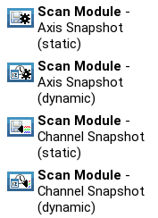

What’s New in EVE Editor
Version 1.31.0 (2019-05-27)
- [Feature-#4260/#1991] introduced dynamic snapshot scan modules. Dynamic snapshots allow determining the list of devices not until the scan is executed.

More information on scan module types can be found in the topics Scan Description and Scan Module View.
- [Bug-#3780] Entering negative Limits for detector channel average measurements is now disallowed (using absolute value).
For older versions, see the What’s New Archive.